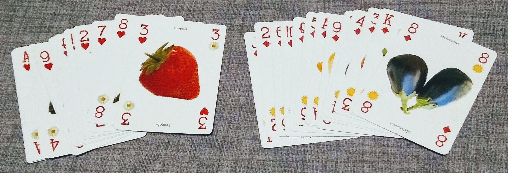

Informatica per progetti
Istituto di Istruzione Superiore G. Marconi
Materia: Informatica
Anno: terzo
Benvenuti ragazzi!
Questo materiale riepiloga quanto detto a lezione negli scorsi giorni.
Le risposte alle domande dei compiti in classe sono tutte incluse in questo materiale.
I riferimenti al libro di testo sono tra parentesi quadre, come ad esempio [pag. 1].
Il testo in questi box sono per approfondimento. La lettura di questo materiale non è strettamente necessaria per le verifiche, ma è consigliata per vostra cultura personale e in quanto sapere indispensabile per chi vuole diventare un informatico.
Buon studio e buon lavoro.
Concetti base di programmazione
Quando vogliamo imparare a programmare, in qualsiasi linguaggio, ci troviamo di fronte ad una pagina vuota.
Cosa dobbiamo fare? Cosa dobbiamo scrivere in questa pagina che ci si presenta davanti?
Quello che stiamo per imparare in questo corso è qualcosa di fortemente creativo: non andremo solo a scrivere del codice che esegue istruzioni, ma andremo a creare un mondo nuovo, in cui ci potremo muovere ed agire con i concetti e le relazioni che avremo definito noi stessi.
Scrivere codice è come scrivere un romanzo o dipingere su una tela. Le nostre penne e pennelli sono tastiera e mouse, e la tela è lo schermo. Ma quello che andremo a realizzare sarà qualcosa che non solo rappresenta la realtà, ma andrà ad interagire con essa, e in un medio periodo può anche modificarla ed esserne modificato. In altre parole il codice è una cosa viva, in continua evoluzione, la cui capacità di replicazione e mutazione (soprattutto per il codice open-source) lo rende molto vicino ad un essere vivente, con cui condivide molte caratteristiche.
Un programmatore è un bravo osservatore
Un programmatore è un informatico, e come sappiamo dal primo anno, il compito principale di un informatico è... risolvere problemi. Per poter risolvere un problema, però, bisogna prima capire qual'è il problema, chi ha il problema e perché. Per poter fare questo, un programmatore deve essere un bravo osservatore della realtà. Più importante del QI o della genialità, è la capacità di saper osservare il mondo, ascoltare le persone, immedesimarsi negli altri e saper trasformare tutto questo in righe di codice che funzionino.
Riferimenti culturali
In questo manuale faccio riferimento ad alcuni autori non prettamente del mondo informatico ma che hanno guidato dal punto di vista concettuale questo corso.
- René Thom: grande matematico e semiologo del '900, nei suoi saggi ha descritto il processo con cui il mondo che ci circonda acquisisce un senso per noi che lo percepiamo.
- Jean Petitot: matematico e filosofo francese, definisce con chiarezza il significato di razionalismo trascendentale, scuola di pensiero a cui mi sento di appartenere. In italiano è stato pubblicato "Per un nuovo illuminismo" (Bompiani, 2013).
Intelligenza artificiale
L'approccio usato in questo manuale ritengo sia anche propedeutico per affrontare lo studio dell'intelligenza artificiale, in cui i concetti esposti acquistano una rilevanza molto maggiore. La morfologia del mondo che noi andiamo a costruire passo passo nella nostra applicazione con la programmazione tradizionale, viene infatti creata in modo automatico, velocissimo e a volte imprevedibile attraverso gli algoritmi di Machine Learning.
Tipi
Tutto comincia con i tipi.
Per dare una forma ed un senso a quello che ci circonda, dobbiamo poter assegnare a quello che ci percepiamo un nome che rappresenta una categoria, un insieme di proprietà e caratteristiche che accumunano un qualcosa ad altre cose che conosciamo già. Questo "nome comune" di cosa, persona o animale" che ci ricorda i nostri studi elementari e che ha posto le basi alla nostra comprensione della lingua parlata e scritte, si ripropone ora all'inizio dei nostri studi dei linguaggi di programmazione. Questi nomi in programmazione prendono il nome di tipi.
Tipi fondamentali
Esistono alcuni tipi che, più o meno universalmente, costituiscono i mattoncini base per tutti gli altri tipi nella programmazione. Questi tipi rappresentano delle caratteristiche base di ciò che ci circonda.
Guardiamoci intorno. Io adesso sono ne salotto di casa mia. Cosa vedo? Cosa sento? Cosa percepisco? Vedo una libreria con un certo numero di libri dentro. Sento una musica a basso volume. Sento un po' caldo. Vedo una tastiera con tanti caratteri scritti sopra, ed uno schermo con tante parole.
I tipi fondamentali sono:
- numeri interi: per rappresentare qualcosa che nella nostra descrizione del mondo non può essere diviso o non ci interessa che sia diviso. Ad esempio il numero di libri nella libreria.
- numeri decimali: per rappresentare qualcosa che ha un valore continuo e divisibile. Ad esempio il volume della musica, la temperatura della stanza.
- caratteri: per rappresentare un singolo carattere, numero o in generale simbolo. Ad esempio i singoli caratteri che vediamo sulla tastiera:
i,7,€, etc. - stringhe: per rappresentare una sequenza di caratteri. Ad esempio una stringa può essere una parola sullo schermo, o un'intera riga, o il titolo di un libro, etc.
- boolean: per cose che possono essere solo vere o false. Ad esempio se la luce è accesa o spenta.
- liste (o array): per rappresentare un insieme di cose. Ad esempio la lista di tutti i libri che si trovano nella libreria.
Di seguito un approfondimento su alcuni tipi sopra descritti.
Numeri interi
In matematica, i numero interi possono essere o naturali (zero e i numeri positivi: 0,1,2,3,... ) e relativi (numeri naturali più numeri negativi: ...,-3,-2,-1,0,1,2,3,...). Non c'è un limite inferiore o superiore al valore che un certo numero può assumere
In informatica, oltre a questo, dobbiamo fare i conti anche con le risorse finite della macchina su cui operiamo. Dobbiamo quindi sempre tener presente che un certo numero intero, occuperà in base alla sua grandezza un certo numero di byte in memoria. Il numero di byte che tipicamente può assumere un intero in memoria è: 1 byte, 2 byte, 4 byte o 8 byte. Un intero di 8 byte è sufficientemente enorme da rappresentare qualsiasi cosa, e di solito non ne servono di più.
Riassumendo, bisogna avere in mente due cose quando parliamo di interi:
- se il numero sarà sicuramente sempre positivo, o ha senso che possa essere negativo
- quant'è il valore massimo o minimo che nella pratica il numero può avere, che determina il numero di byte da riservare in memoria.
In C/C++, il segno e la grandezza si dichiara esplicitamente. In Python, i numeri interi sono sempre con il segno ed il compilatore assegna automaticamente il numero di byte in base al valore.
Numeri decimali
I numeri decimali sono quelli con la virgola, e vengono detti anche numeri a virgola mobile, o floating point numbers.
I numeri decimali in informatica sono sempre con il segno. Anche in questo caso dobbiamo però decidere il numero di byte che occupa in memoria. Il numero di byte che può assumere un numero decimale è: 4 byte o 8 byte. Anche in questo caso, un numero decimale di 8 byte può rappresentare bene praticamente qualsiasi cosa che conosciamo, e non servono più byte.
Nei processori a 64bit, la dimensione tipica dei numeri decimali è sempre 8 byte, che vengono detti anche double precision floating point numbers, o semplicemente double. Nei processori a 8, 16 o 32 bit, per motivi di performance di solito si assegnano 4 byte e solo in caso di necessità se ne assegnano 8.
Come per gli interi, in C/C++ bisogna dichiarare esplicitamente se un float occupa 4 o 8 byte. In Python occupa sempre 8 byte.
Caratteri e stringhe
Per la rappresentazione dei caratteri bisogna fare più attenzione rispetto a quella degli interi perché esistono tanti standard diversi che co-esistono tra di loro. Semplificando, attualmente esistono due standard principali:
- ASCII: rappresenta i caratteri inglesi (senza accenti o altri segni diacritici), i numeri e alcuni simboli base come
@,!,#,5e simili. Usa un byte di memoria e viene utilizzato in casi particolari o in vecchi sistemi - UTF-8: rappresenta i caratteri di tutte le lingue (italiano, spagnolo, cinese, indiano, sanscrito, greco antico, etc), i segni matematici, le emoji e tanti altri simboli. Usa un numero variabile di byte: per i caratteri più comuni (essenzialmente quelli ASCII) usa un solo byte, in tutti gli altri casi usa due byte. Alcuni esempi di caratteri UTF-8 sono:,
·∫º,‚â¢,¬©,‚àÇ,üå∑, etc.
Nel linguaggio C, per rappresentare un singolo carattere si usa il singolo apice, ad esempio 'k' è il singolo carattere k; per rappresentare le stringhe si usa il doppio apice, ad esempio "hello" è la stringa hello. In C l'espressione 'hello' ritorna un errore.
In Python, non si può rappresentare un singolo carattere, ma esistono solo stringhe. Per rappresentare le stringhe, si può usare sia indifferentemente sia il singolo che il doppio apice, quindi le espressioni "hello" ed 'hello' sono equivalenti.
Come scegliere tra singolo e doppio apice? Dipende se all'interno della stringa che vogliamo rappresentare, ci sono degli apici. Se ci sono dei singoli apici all'interno, conviene usare i doppi apici per le stringhe, in modo che la stringa
"l'alba è meravigliosa"sia valida. Se invece all'interno della stringa abbiamo doppi apici, conviene usare esternamente i singoli apici, in modo che ad esempio'"Python" è bello'sia una stringa valida. Se all'interno della nostra stringa ci sono sia singoli che doppi apici, dobbiamo usare il carattere di escape\'e\"; ad esempio possiamo scrivere'l\'alba è "meravigliosa"oppure `"l'alba è "meravigliosa"'. In caso di incertezza comunque, lo standard è utilizzare il singolo apice.
In Python esistono anche altri modi di rappresentare le stringhe, lo vedremo più avanti.
Boolean
Come abbiamo detto, un boolean rappresenta qualcosa che può essere o solo vero o solo falso. Una variabile boolean può essere assegnata in uno dei seguenti modi:
- direttamente a vero o falso, ad esempio
a = True - come risultato di una operazione logica, ad esempio
a = 3 > 2
TODO: inserire foto di Boole
Attenzione a non abusare del tipo boolean: usarlo solo quando concettualmente nel nostro mondo non possono esserci altri valori o valori intermedi. Ad esempio immaginiamo che nel nostro mondo ci sono sedie rosse e gialle. Mettere una variabile boolean del tipo is_red, che mi dice se la sedia è rossa, è una pessima idea. Primo perché non è chiaro cosa succede quando il valore è falso e secondo perché se domani arrivano delle sedie blu, devo cambiare tutto il codice :(
Uno dei punti su cui variano molto i diversi linguaggi è come e se convertire altri tipi in boolean. Ad esempio, posso considerare il valore
0come falso, ed1come vero? Posso dire che una lista vuota è falsa, ed una lista non vuota è vera? Oppure che una stringa vuota è falsa, ed una stringa non vuota è vera? Questo in informatica viene detto "Truthy and Falsy" del linguaggio. Per sapere cosa è vero e falso in Python leggete qui, in C++ leggete qui.
Liste (o array)
In quanto esseri umani, una delle cose fondamentali che facciamo continuamente è raggruppare insieme le intorno a noi che abbiano una qualche caratteristica in comune. Potrebbero essere un insieme di libri che si trovano sullo stesso scaffale, o tutta la frutta che abbiamo in casa, o gli articoli che si trovano nel magazzino. Questi insiemi sono rappresentati nei diversi linguaggi di programmazione in modo molto vario e con diversi nomi, ma quasi sempre sono un tipo base del linguaggio stesso.
Nonostante le diversità, una caratteristica comune di tutti i linguaggi è che per definire e manipolare le liste si usano le parentesi quadre []. Ad esempio, una lista di nomi si può definire come names = ["John","Mario",Akira"], e per leggere un elemento di una lista si usa ad esempio names[1].
Attenzione: per convenzione, quasi tutti i linguaggi, inclusi C e Python, cominciano a contare da 0, mentre noi nella vita quotidiana cominciamo da 1. Nella pratica dell'informatica quindi, se una lista ha 3 elementi, il primo elemento della lista è l'elemento 0, e l'ultimo è l'elemento 2. Vedremo degli esempi in seguito.
Una nota sulla nomenclatura: il tipo base di lista in C si chiama array, mentre in Python si chiama list. Tecnicamente tra liste e array ci sono delle differenze, ma quello che interessa a noi in questo momento è che in tutti i linguaggi esistono dei tipi base per rappresentare un insieme di oggetti con delle caratteristiche in comune.
Approfondimento: tipi statici, dinamici, deboli e forti
La caratteristica che probabilmente differenzia maggiormente i vari linguaggi di programmazione tra di loro, è come il linguaggio gestisce i tipi. Ci sono due assi su cui ci si può muovere:
- static vs dynamic
- weak vs strong
L'argomento è molto interessante ma anche altrettanto complesso, e richiede una buona conoscenza di come funziona la gestione della memoria, sia durante la compilazione che a runtime.
Questo piccolo paragrafo è solo per mettervi un po' di curiosità e farvi capire che l'oceano è grande :) Ne parleremo in modo più approfondito l'anno prossimo :D
Classi
Finora abbiamo visto solo i tipi base. Ma se volessimo rappresentare nel nostro mondo qualcosa di più complesso? Ad esempio se volessimo rappresentare in modo semplice un libro con diverse caratteristiche, come ad esempio autore, titolo, numero di pagine, peso, colore? Ci servirebbe un modo per comporre i tipi base insieme, per costruire il concetto che vogliamo rappresentare, un po' come dei mattoncini lego che costruiscono un oggetto più grande.
Il modo più comune in informatica per raggiungere questo obiettivo è creare delle classi di oggetti.
Come sempre, nei diversi linguaggi di programmazione ci sono moltissime varianti del concetto di classe. Noi per ora ci limitiamo a vedere C++ e Python (nota: C non ha il concetto di classe).
Una classe possiamo immaginarla come uno stampino per creare oggetti tutti simili fra di loro.
Useremo in modo estensivo le classi, quindi è bene cominciare a prendere subito familiarità con questo concetto.
Per approfondimenti vedi anche il materiale del secondo anno.
Quando da una classe creiamo un oggetto, dobbiamo dire al programma come fare a costruire quel dato oggetto, ad esempio qual'è il titolo del libro, o l'autore, e così via. Abbiamo quindi bisogno di una funzione che ci aiuti in questo compito; tale funzione prende il nome di costruttore della classe.
Python

Il primo linguaggio che vedremo quest'anno è Python. Python è un linguaggio completamente open-source, il codice sorgente è reperibile sulla pagina ufficiale di GitHub ed è rilasciato sotto la Python License.
 Python è stato creato alla fine degli anni '80 dall'olandese Guido van Rossum, all'età di circa trent'anni. Come molti colleghi nell'ambito informatico, il suo operato è stato costantemente guidato da alcuni ideali, in particolare van Rossum credeva che la programmazione dovesse accessibile a tutti, e quindi le scelte per il linguaggio hanno avuto sempre questa direzione. Nel 1999 sono state pubblicate delle linee guida che riassumevano questi concetti, conosciute come "The Zen of Python". È anche possibile leggere queste linee guida direttamente dentro Python, scrivendo `import this` :)
Python è stato creato alla fine degli anni '80 dall'olandese Guido van Rossum, all'età di circa trent'anni. Come molti colleghi nell'ambito informatico, il suo operato è stato costantemente guidato da alcuni ideali, in particolare van Rossum credeva che la programmazione dovesse accessibile a tutti, e quindi le scelte per il linguaggio hanno avuto sempre questa direzione. Nel 1999 sono state pubblicate delle linee guida che riassumevano questi concetti, conosciute come "The Zen of Python". È anche possibile leggere queste linee guida direttamente dentro Python, scrivendo `import this` :)
Se volete provare gli snippet di codice in questa pagina, potete usare il playground online di SoloLearn.
Caratteristiche
Python ha una sintassi essenziale, eliminando quasi tutta la punteggiatura.
Esempio di un programma completo Python valido:
catalogue = ["Harry Potter e il calice di fuoco", "Il rosso e il nero", "Il piccolo principe"]
for title in catalogue:
print(title)
print("goodbye")
Nella prima riga, viene dichiarata una nuova variabile catalogue. Il tipo della variabile viene inferito dal valore assegnato; in questo caso, siccome assegniamo qualcosa che è tra parentesi quadre, il tipo di catalogue è una lista. Fate attenzione: la riga non finisce con il punto e virgola!
Nella seconda riga c'è un ciclo for. Notate che non ci sono parentesi di nessun tipo, né tonde né graffe; attenzione però che la riga in questo caso finisce con i due punti Le stesse regole valgono anche per il condizionale if.
Ma se non ci sono parentesi graffe, come si fa a sapere dove finisce il contenuto del ciclo for? Qui c'è il colpo di genio di van Rossum: usare l'indentazione del codice per definire dove finiscono i blocchi, ed obbligare lo sviluppatore ad usare le buone pratiche di indentazione!
Quindi vediamo che il contenuto del for è solo print(title), mentre la riga successiva, la quarta, è fuori dal ciclo.
Se eseguiamo il codice, avremo il seguente output su console:
Harry Potter e il calice di fuoco
Il rosso e il nero
Il piccolo principe
goodbye
Importare una libreria esterna
Se ci servono delle librerie esterne per fare delle operazioni particolari, su usano le keyword import e from. Ad esempio immaginiamo di voler stampare la data e l'ora attuali.
from datetime import datetime
print(datetime.now())
che avrà come output il giorno e l'ora attuali, ad esempio:
2019-11-29 21:57:27.676783
In generale, dopo il from ci va il nome di un file Python (senza estensione), e dopo import il nome di una variabile. In questo esempio, nella prima riga importiamo la variabile datetime da un file che si chiama con lo stesso nome. Il file datetime nel caso specifico non è creato da noi ma è una libreria di sistema, ma possiamo usare la stessa sintassi anche per i nostri file.
Creare una classe
Per creare una classe, ad esempio la classe Book, si usa la seguente sintassi:
class Book:
def __init__(self,title,author):
self.title = title
self.author = author
Vediamo bene cosa abbiamo fatto. La prima riga class Book dichiara la classe Book. Nella seconda riga stiamo usando la funzione di sistema __init__(self,...) che è il costruttore della classe, ovvero serve per costruire un nuovo oggetto della classe. Il primo parametro è sempre la keyword self, che identifica l'oggetto che stiamo andando a creare. I parametri successivi servono per inizializzare l'oggetto; nel nostro caso stiamo dicendo che il nostro libro deve sempre avere un autore ed un titolo.
Si può vedere che init è una funzione di sistema perché il nome inizia e finisce con due trattini bassi. Questa è una convenzione specifica di Python.
Per creare un oggetto di questa classe, usiamo la seguente sintassi:
harry_potter = Book("Harry Potter ed il principe mezzosangue","J.K.Rowling")
print(harry_potter.title)
Stiamo dichiarando una variabile chiamata harry_potter che è un oggetto della classe Book, inizializzata con i parametri che seguono. Fate attenzione: non bisogna specificare il parametro self quando si costruisce un oggetto, perché è una variabile che passa Python automaticamente alla funzione __init__.
Mettendo insieme i pezzi, il codice finale per creare una classe ed un oggetto di questa classe sarà:
class Book:
def __init__(self,title,author):
self.title = title
self.author = author
harry_potter = Book("Harry Potter ed il principe mezzosangue","J.K.Rowling")
print(harry_potter.title)
L'output di questo snippet sarà:
Harry Potter ed il principe mezzosangue
Notate l'indentazione: si può capire che la variabile harry_potter viene dichiarata fuori dalla classe perché non ha indentazione.
Librerie aggiuntive
Solo le librerie esterne più comuni, come datetime, sono già pre-installate in Python. Esistono infatti decine di migliaia di librerie, in continuo cambiamento, scaricarle tutte all'inizio sarebbe impossibile oltre che inutile!
Fortunatamente esiste un semplice comando per scaricare ed installare nuove librerie. Aprire un terminale sul proprio computer (anche all'interno di Visual Studio Code), e scrivere:
pip3 install <nome-libreria>
Vediamo che pip3 è un comando che gestisce i pacchetti Python (Pip sta per "Pip installs package", è un acronimo ricorsivo), e <nome-libreria> è il nome della libreria che vogliamo scaricare.
Riferimenti W3Schools
Il sito w3schools è un buon riferimento per imparare il Python. Consigliamo in particolare le seguenti pagine:
A breve ci serviranno anche i seguenti concetti:
Installare Python
Per installare Python su Visual Studio Code, questa è la guida ufficiale. Riepiloghiamo in breve qui i passaggi.
Installare Python sul proprio computer
Andare sul sito Python downloads e scaricare l'ultima versione di Python premendo il bottoncione giallo grande con scritto "Download Python".
Quando lo avviate, vedrete una schermata di questo genere (la versione di Python potrebbe cambiare):

Attenzione: selezionate l'ultima spunta in basso "Add Python to PATH" per poter usare i comandi Python anche da terminale.
Seguite le istruzioni fino in fondo, e se necessario riavviate Visual Studio Code.
Visual Studio Code
Aprite Visual Studio Code ed installate l'estensione Python di Microsoft.

Una volta installata, quando aprirete un file con estensione .py vi comparirà nella barra blu in basso la possibilità di selezionare l'interprete Python. Selezionate l'ultima versione che avete appena installato.

Creare una web app con HTML5 e Python
Vorrei collegarmi subito a quello che state studiando in TPSI quest'anno e creare una semplicissima applicazione con HTML e Python.
Caso di studio
Immaginiamo di voler gestire una biblioteca scolastica. Da un lato ci serve del codice che gira da qualche parte nel cloud che gestisce la biblioteca, ed una pagina web per poter visualizzare la lista dei libri.
Useremo Python per la prima parte (server), e HTML per la seconda parte (pagina web).
Python
Immaginiamo in maniera veramente minimale che il nostro catalogo sia formato solo dal seguente file Python, a cui diamo il nome di library.py.
# library.py
catalogue = ["Harry Potter e il calice di fuoco", "Il rosso e il nero", "Il piccolo principe"]
Più essenziale di così, si muore... eppure è un codice valido e funzionante.
Web server
Per poter far comunicare Python con la pagina HTML però, serve qualcuno che faccia da intermediario. Non posso infatti chiamare del codice Python direttamente dalla pagina web! Le pagine web possono infatti interagire unicamente tramite dei link, o più precisamente degli URL, e noi ancora non abbiamo nulla del genere.
L'intermediario che mette in comunicazione pagina web e codice sul server si chiama, in modo non troppo sorprendente, web server. Vediamo come si fa su Python.
Esistono diverse librerie che forniscono un web server, noi in questo tutorial useremo Flask, che è estremamente leggero e semplice da usare, anche se magari non ha tutte le funzionalità che offrono altre librerie.
Essendo una libreria esterna non di sistema, bisogna prima di tutto installarla. Come abbiamo visto, apriamo un terminale e scriviamo:
pip3 install flask
et voilà! La libreria è installata e pronta all'uso.
Ora creiamo un nuovo file nel nostro progetto, che chiamiamo app.py. Attenzione: il nome deve essere esattamente questo, altrimenti non funziona tutto automagicamente üé©.
from flask import Flask
from library import catalogue
import json
app = Flask("marconi")
@app.route("/")
def data_book():
return json.dumps(
[book for book in catalogue]
)
Vediamo cosa abbiamo fatto. Abbiamo importato Flask dalla libreria flask e il nostro catalogo dal file library che abbiamo creato precedentemente. Importiamo anche la libreria di sistema json, che è utile per convertire le variabili Python nel formato stringa JSON (vedi dopo.
La riga app = Flask("marconi") crea un web server e gli da il nome di "marconi" (possiamo mettere quello che preferiamo).
La riga @app.route("/") è un'annotazione: sta ad indicare che la funzione successiva deve essere chiamata quando qualcuno prova ad accedere alla pagina web.
La funzione data_book() viene quindi chiamata quando interroghiamo il web server. Questa funzione ritorna il nostro catalogo in formato JSON. È formata dalle seguenti parti:
json.dumps()è una funzione che converte il parametro che gli viene passato in formato JSON[book for book in catalogue]è una sintassi tipica di Python, che crea una nuova lista con all'interno tutti gli elementi dicatalogue.
Nel dettaglio, stiamo dicendo che per ogni elemento book all'interno della lista catalogue, vogliamo creare un elemento con esattamente lo stesso valore di book.
La precedente forma compatta è equivalente al seguente codice:
mylist = []
for book in catalogue:
mylist.append(book)
Come si può vedere, nella forma compatta non abbiamo bisogno di dichiarare la variabile di appoggio mylist.
Attenzione: se book non fosse un tipo base ma un oggetto, questa sintassi non va bene, perché Python non saprebbe come convertire automaticamente un oggetto ti tipo Book in una stringa JSON. Per risolvere il problema, possiamo dire a Python che per trasformare l'oggetto in JSON deve associare ad ogni proprietà della classe Book una corrispondente proprietà nella stringa JSON. Per fare questo possiamo usare la proprietà __dict__, che come potete intuire dal doppio trattino basso all'inizio e alla fine, è una proprietà di sistema, assegnata automaticamente a tutti gli oggetti di una classe. La funzione precedente diventerebbe quindi:
def data_book():
return json.dumps(
[book.__dict__ for book in catalogue]
)
Il formato JSON
Fate attenzione: JSON è un formato per scambiarsi i dati tra macchine (machine-to-machine), ma che può essere letto e scritto abbastanza facilmente anche dagli esseri umani. JSON quindi non è un codice, o un'applicazione, o una libreria, ma è un formato di stringa che permette alle macchine di comunicare fra loro in modo comprensibile. Volendo fare un paragone con la lingua umana, è come la sintassi della frase: per capirsi le persone devono mettere nel corretto ordine soggetto, verbo e complementi, altrimenti non ci si capisce.
JSON usa le seguenti convenzioni:
- le parentesi graffe per definire gli oggetti
- le parentesi quadre per le liste
- la virgola per separare gli elementi di una lista
- i due punti per definire le proprietà di un oggetto
Ad esempio, per definire una lista di due oggetti, ognuno con le proprietà title e author, scriveremo:
[
{
"title":"Harry Potter e il calice di fuoco",
"author":"J.K.Rowling"
},
{
"title":"Il rosso e il nero",
"author":"Stendhal"
},
{
"title":"Il piccolo principe",
"author":"Antoine de Saint-Exupéry"
}
]
Per generare o validare stringhe JSON, è possibile usare servizi online come ad esempio JSON lint.
Lanciare il web server
Per lanciare il web server, aprite un terminale nella cartella del vostro progetto e scrivete:
python3 -m flask run
Se tutto va bene, vi dovrebbe comparire la scritta Running on http://127.0.0.1:5000/. Ecco quindi il link che ci serviva per far comunicare la pagina web con la nostra applicazione!
HTML
Ora creiamo un nuovo file, sempre nel nostro progetto, che chiamiamo index.html.
<!DOCTYPE html>
<html lang="it">
<head>
<meta charset="UTF-8">
<meta name="viewport" content="width=device-width, initial-scale=1.0">
<meta http-equiv="X-UA-Compatible" content="ie=edge">
<title>Biblioteca scolastica</title>
</head>
<body>
<ul>
</ul>
</body>
</html>
È una semplice pagina che visualizza una lista, in questo momento vuota.
Come facciamo a riempire la lista con i dati presi dal web server? Ci serve un po' di JavaScript.
JavaScript
Subito dopo il tag </body> e subito prima del tag </html>, nella penultima riga insomma, aggiungiamo il codice che ci serve.
Prima di tutto scarichiamo ed importiamo una libreria JavaScript che ci semplificherà molto la vita e chi si chiama JQuery. Potete scaricare il file direttamente cliccando con il tasto destro qui e scegliendo "Salva link come" o qualcosa di simile. Salvate il file sempre nella cartella di progetto.
Quindi aggiungiamo la seguente riga:
<script src="jquery-3.4.1.min.js"></script>
OK, abbiamo importato la libreria. Ora dobbiamo prendere i dati dal web server. Lo facciamo scrivendo subito dopo un nostro pezzo di codice all'interno del tag <script>.
<script>
// Prende i dati come JSON dall'URL
// quando ha finito di prendere i dati, chiama la funzione "makeList"
$.getJSON("http://127.0.0.1:5000/").done(makeList);
</script>
Attenzione a quello che succede. Il codice dentro il tag script è JavaScript. Il simbolo del dollaro ($) indica che stiamo usando la libreria JQuery che abbiamo importato subito prima. Quando i dati sono stati completamente ricevuti (ci potrebbe volere del tempo, se i libri fossero molti), viene chiamata la funzione makeList, che dobbiamo ancora definire.
Subito dopo la riga precedente, creiamo ora la funzione makeList:
function makeList(jsonBooks) {
for (book of jsonBooks) {
let newItem = `<li>${book}</li>`;
$("ul").append(newItem);
}
}
Vediamo cosa abbiamo fatto. Nella prima riga abbiamo creato una funzione con la keyword function; la funzione prende in input un parametro che gli viene passato da JQuery quando i dati sono stati ricevuti.
Subito dopo c'è un ciclo for, molto simile a quello del Python, con qualche differenza:
- JavaScript usa le parentesi dopo la keyword
for - JavaScript usa la keyword
ofinvece cheinper iterare all'interno di una lista - JavaScript usa le parentesi graffe per contenere il corpo del
for
All'interno del for, nella prima riga creiamo il nuovo item che vogliamo andare ad aggiungere alla lista.
Nella riga successiva, c'è un istruzione che dice:
- usando JQuery (
$), seleziona la lista non ordinata (ul) - all'interno della lista, aggiungi alla fine (
append) il nuovo elemento appena creato
Il codice finale di tutta la pagina verrà come segue:
<!DOCTYPE html>
<html lang="it">
<head>
<meta charset="UTF-8">
<meta name="viewport" content="width=device-width, initial-scale=1.0">
<meta http-equiv="X-UA-Compatible" content="ie=edge">
<title>Biblioteca scolastica</title>
</head>
<body>
<ul>
</ul>
</body>
<script src="jquery-3.4.1.min.js"></script>
<script>
// Prende i dati come JSON dall'URL
// quando ha finito di prendere i dati, chiama la funzione "makeList"
$.getJSON("http://127.0.0.1:5000/").done(makeList);
function makeList(jsonBooks) {
for (book of jsonBooks) {
let newItem = `<li>${book}</li>`;
$("ul").append(newItem);
}
}
</script>
</html>
Go Live
Su Visual Studio Code (detto anche VSCode per brevità), potete lanciare questa pagina con "Go Live" nella barra in basso, lo trovate sulla destra. Se non lo vedete, assicuratevi di aver installato l'estensione "Live Server" su VSCode.
Al primo lancio vedrete che non succede niente. Per controllare cosa è successo, aprite la console di debug premendo con il tasto destro in qualsiasi punto della pagina web nel browser e cliccando su "Analizza elemento" o "Ispeziona elemento", quindi nel pannello che si apre, selezionate la tab console.
Se avete fatto tutto correttamente, dovrebbe comparirvi un messaggio di errore del tipo:
Cross-Origin Request Blocked: The Same Origin Policy disallows reading the remote resource at http://127.0.0.1:5000/. (Reason: CORS header ‘Access-Control-Allow-Origin’ missing).
È normale, perché state usando due web-server diversi per la stessa pagina, questa è una cosa potenzialmente pericolosa ed il browser vi impedisce di farlo. Per aggirare la limitazione, il modo più semplice è installare queste estensioni per Firefox o per Chrome. In questo modo vi caricherà la pagina correttamente anche in questo caso.
Ovviamente non è questo il modo più corretto di procedere. Per fare le cose per bene, bisogna spostare tutto su Flask, anche le pagine HTML. È un'operazione abbastanza semplice ma la vedremo dopo che vi sarete impratichiti con questa parte.
Algoritmi di ordinamento
Come abbiamo detto parlando di tipi, noi viviamo in un mondo fatto di "cose" raggruppate in vario modo: gli studenti della vostra classe, le pizze nel menù della pizzeria, i risultati della ricerca su un sito di e-commerce.
La maggior parte di questi gruppi è ordinato, ovvero tutti gli elementi all'interno di questo gruppo sono messi in una precisa sequenza. Prendendo gli esempi di prima, gli studenti sono messi in ordine alfabetico, le pizze sono spesso messe in ordine di prezzo, e i risultati della ricerca di solito sono messi in ordine di "rilevanza".
Non stupisce quindi che l'operazione di ordinamento è di estrema importanza nel mondo dell'informatica, e l'ottimizzazione fino all'ultimo bit o microsecondo è stato oggetti di profondi studi ed è ancora un ambito di studi in continua evoluzione.
Ordinamento ed osservazione del mondo che ci circonda
Come molto spesso accade, la maggior parte degli algoritmi che vedremo prendono spunto dall'osservazione di come si comportano gli esseri umani quando gli viene chiesto di ordinare qualcosa o dall'osservazione di fenomeni naturali. Personalmente consiglio questo modo di procedere: non rimanere chiusi in una stanza davanti ad un monitor ma uscire fuori, osservare gli altri, la natura, il mondo che ci circonda. Gli inglesi dicono get out of the building. Funziona.
Google e i motori di ricerca

Come in ogni nuovo ambito, i primi che ne hanno capito davvero l'importanza sono riusciti a trarne un enorme profitto. Nel mondo degli algoritmi di ordinamento, possiamo dire che l'azienda che è riuscita in quest'ambito è Google.
La nascita di Google e il suo core business ancora oggi sono infatti basati sul suo noto motore di ricerca www.google.com. Di base, un motore di ricerca è un enorme algoritmo di ordinamento che mette in un preciso ordine dei link a pagine web secondo una serie di diversi fattori (Google li chiama ranking factors), nel caso di Google circa 200. Una panoramica sul motore di ricerca di Google lo trovate qui, mentre la pagina ufficiale funzionamento della "Ricerca Google" la trovate qui qui.
Un primo algoritmo
Immaginiamo che ci vengano date cinque carte da gioco e ci venga chiesto di ordinarle.

Una possibile soluzione può essere quella di prendere la carta con il valore più basso, in questo caso il 5, e metterla all'inizio del mazzo.
Ripetiamo adesso l'operazione anche per le carte successive: mettiamo in ordine il 6...
Il 7 ce lo troviamo già nella posizione giusta, passiamo a sistemare l'8.

Anche la regina si trova già al suo posto e quindi siamo arrivati ad ordinare le nostre cinque carte.
L'algoritmo
Proviamo ad implementare questo algoritmo con Python.
Creiamo una lista di partenza con il valore delle carte del mio mazzo.
cards = [7, 12, 8, 5, 6]
Ora creiamo una nuova lista vuota, che conterrà gli elementi ordinati.
sorted_cards = []
Scorriamo tutta la lista originale e cerchiamo il valore più basso, quindi copiamolo nella nuova lista.
min_val = min(cards)
sorted_cards.append(min_val)
OK, ora dobbiamo ripetere queste istruzioni per tutti gli elementi della lista originale.
for _ in range(len(cards)):
min_val = min(cards)
sorted_cards.append(min_val)
Proviamo a vedere cosa succede se stampiamo la lista ordinata.
>>> print(sorted_cards)
[5, 5, 5, 5, 5]
Abbiamo una lista della stessa lunghezza dell'originale, ma tutti gli elementi sono il valore minimo ü§î. In effetti, ogni volta che trovo un valore minimo lo devo togliere dalla lista originale, per evitare che venga trovato sempre quello!
Il nuovo algoritmo diventa quindi così:
for _ in range(len(cards)):
min_val = min(cards)
sorted_cards.append(min_val)
cards.remove(min_val)
Se stampo il risultato ottengo:
>>> print(sorted_cards)
[5, 6, 7, 12, 18]
Bene, ha funzionato! Abbiamo creato il nostro primo algoritmo di ordinamento üòä.
Questo algoritmo di ordinamento ha un nome, si chiama selection sort (ordinamento per selezione). È un algoritmo semplice ma efficace per liste di piccole dimensioni, come quella dell'esempio.
Osservazioni
Se è così facile ordinare una lista, perché si parla tanto di ordinamento? Il fatto è che quando la lista cresce di dimensioni, le risorse necessarie per poterla ordinare possono crescere in maniera vertiginosa, rendendo nella pratica impossibile l'ordinamento stesso oppure molto svantaggioso.
Proviamo ad esempio ad usare il nostro algoritmo per liste di lunghezza diversa e calcoliamo il tempo che ci mette l'algoritmo per ordinare la lista. Il risultato è nella tabella che segue.

Nel grafico vediamo il tempo (in secondi) che ci mette l'algoritmo per ordinare liste di lunghezza 10000, 20000, 30000, 40000, 50000 elementi. Possiamo vedere che il tempo aumenta in modo non lineare, ovvero al raddoppiare degli elementi il tempo aumenta più del doppio. Facendo un'analisi un po' più approfondita, si può vedere che l'andamento è esponenziale, e in particolare il tempo aumenta come il quadrato degli elementi della lista: al raddoppiare degli elementi, il tempo aumenta di quattro volte.
Questo è un bel problema, perché se ho liste di milioni o miliardi di elementi, il tempo di ordinamento può schizzare a valori proibitivi.
Per questo si cercano degli algoritmi più efficienti. Prima di andare avanti però è necessario dare una definizione della parola "efficiente".
Complessità
Nella terminologia degli algoritmi di ordinamento, aumentare l'efficienza significa ridurre la complessità di un algoritmo. Meno è complesso l'algoritmo, più sarà efficiente.
Minore complessità -> Maggiore efficienza
Nella definizione di complessità, dobbiamo fare riferimento come sempre ai due componenti fondamentali di un sistema di elaborazione:
- processore (CPU)
- memoria primaria (RAM)
Ridurre la complessità relativa alla CPU significa riuscire ad arrivare allo stesso risultato (l'array ordinato) con meno operazioni, e quindi in meno tempo. Questo tipo di complessità viene quindi detta computazionale o temporale.
Ridurre la complessità relativa alla RAM significa occupare meno "spazio" in memoria RAM possibile, quindi viene detta anche complessità spaziale.
Misura della complessità
Quando calcoliamo la complessità temporale o spaziale, non ci interessa avere il numero esatto di operazioni o l'esatta quantità di memoria occupata, ma ci basta sapere "più o meno" quanto tempo ci metterà e quanta memoria occuperà. Questo valore approssimato viene detto ordine di grandezza. Esiste una simbologia specifica che serve ad indicare l'ordine di grandezza, ed è la notazione O-grande, che si scrive O(n).
Ad esempio, immaginiamo che, per un'attività didattica, al professore servano degli smartphone e li chieda agli studenti della classe. Quanti smartphone più o meno si può aspettare di trovare in classe? Possiamo ipotizzare che ogni studente avrà il proprio dispositivo (alcuni forse ne avranno due, alcuni nessuno), quindi l'ordine di grandezza del numero di smartphone è circa pari a quello degli studenti. Se gli studenti sono un numero n (es. 20), i dispositivi nella classe saranno anch'essi circa n. In questo caso si dice che il numero di smartphone nella classe è O(n) (si legge "o di enne"), dove n è il numero di studenti.
Immaginiamo ora di voler organizzare un torneo di ping pong tra gli studenti di una classe. Vogliamo che tutti gli studenti giochino contro tutti gli altri studenti. Quante partite dovremo pianificare, più o meno? Se ci sono n studenti ed ognuno deve fare circa n partite, il numero di partite è (circa) n * n = n2. In notazione O grande, si dice che il numero di partite è O(n2). Anche qui il numero di partite non sarà esattamente n2, ma a noi serve sapere una stima approssimativa.
Complessità computazionale (o temporale)
Tornando al grafico del selection sort, abbiamo visto che il tempo necessario per l'ordinamento va come il quadrato del numero di elementi da ordinare. Se indichiamo con n il numero di elementi della lista, possiamo quindi dire che:
tempo di ordinamento selection sort = O(n2)
con n = numero di elementi della lista.
Il nostro obiettivo sarà trovare degli algoritmi che abbiano una relazione tra tempo e numero di elementi più vantaggiosa.
Complessità spaziale
Con la nostra implementazione del selection sort, in memoria RAM ci serve l'array sorted_list della stessa grandezza dell'array di partenza. La complessità spaziale è quindi:
O(n)
Questa complessità è buona, e non possiamo ottenere ordini di grandezza migliori.
Ciò non toglie che possiamo comunque "limare" la nostra soluzione per guadagnare un po' di memoria. Lo vedremo nella prossima pagina.
Selection sort: miglioramenti
Riprendiamo la nostra implementazione del selection sort finora, cercando di approfondire alcuni aspetti ed apportare delle migliorie.
Ordinamento sul posto
Eravamo arrivati a questo punto:
my_list = [7, 12, 18, 5, 6]
for _ in range(len(my_list)):
min_val = min(my_list)
sorted_list.append(min_val)
my_list.remove(min_val)
Per ordinare la lista, abbiamo creato una nuova lista di appoggio sorted_list. Se l'array è molto grande questo potrebbe essere un problema.
In effetti, pensandoci, quando abbiamo ordinato il mazzo di carte non abbiamo creato una copia del mazzo, ma abbiamo spostato la posizione delle carte in modo che il mazzo di partenza fosse ordinato. Questo tipo di ordinamento che modifica direttamente l'array in input si chiama ordinamento sul posto (in inglese in place).
Non ripeteremo qui la soluzione originale che abbiamo svolto in laboratorio, potete trovare tutto il codice qui.
Calcolo della complessità temporale
Cerchiamo di calcolare perché questo algoritmo impiega un O(n2) operazioni per ordinare l'array.
Analizziamo il codice, ricordando che len(my_list) è il numero di elementi della lista e quindi esattamente il nostro n.
# Qui c'è un for: le operazioni al suo interno
# vengono ripetute per n volte
for _ in range(len(my_list)):
# per trovare il minimo, bisogna scorrere tutta
# la lista, quindi servono circa n operazioni
min_val = min(my_list)
# append è un'operazione singola
sorted_list.append(min_val)
# remove può essere considerata come un'operazione singola
my_list.remove(min_val)
Quindi, il numero di operazioni è:
- n operazioni per min
- 1 operazione per append
- 1 operazione per remove
- il tutto ripetuto per n volte
Mettiamo insieme le cose e abbiamo:
complessità temporale = (n+1+1)*n = (n+2)*n = n2+2*n
OK, ci siamo quasi. La nostra complessità ha due addendi:
- n2
- 2*n
Quando n diventa molto grande, il primo termine cresce molto di più del secondo, e quindi il secondo si può trascurare.
Per dimostrazione, facciamo una prova ad esempio con n = 1000:
- n2 = 10002 = 1 milione
- 2*n = 2000
Considerando che stiamo facendo dei calcoli approssimati, possiamo tranquillamente trascurare 2000 rispetto ad un milione!
Per la complessità temporale consideriamo solo il primo termine, e quindi otteniamo:
complessità temporale = O(n2)
Caso migliore, peggiore e medio
La complessità di un algoritmo di ordinamento potrebbe dipendere da alcuni fattori, come ad esempio se gli elementi della lista sono già ordinati, se sono quasi ordinati (cioé la maggior parte degli elementi sono ordinati e solo qualcuno è fuori posto), o completamente casuali.
Si distinguono quindi tre casi di complessità:
- caso migliore: il minimo valore possibile di complessità
- caso peggiore: il massimo valore possibile di complessità
- caso medio: un valore che mediamente assume la complessità
Per l'algoritmo di selection sort, il calcolo della complessità temporale non dipende da come è fatta al suo interno la lista: in ogni caso ci fa sempre lo stesso numero di operazioni. Quindi possiamo affermare quanto segue.
| Selection sort | complessità temporale |
|---|---|
| caso migliore | O(n2) |
| caso peggiore | O(n2) |
| caso medio | O(n2) |
Bubble sort
Un altro algoritmo di ordinamento molto semplice che vedremo ora è il bubble sort (ordinamento a bolla).

Immaginiamo che la nostra lista da ordinare sia come un oceano, in cui il primo elemento corrisponde al fondo del mare e l'ultimo elemento sia la superficie. Immaginiamo anche che gli elementi più grandi siano i più più leggeri (meno densi), e che tendano ad andare come delle bolle verso la superficie.
Con questa immagine in mente, vediamo cosa dobbiamo:
- prendere il primo elemento della lista
- confrontarlo con tutti i successivi
- se il primo elemento è maggiore di uno sopra di lui, scambiare i due elementi fra loro, in modo da far "risalire" verso la superficie l'elemento
- quando ho finito con il primo elemento, ripetere l'operazione per tutti gli altri elementi della lista
Vediamo una prima implementazione di questa procedura.
my_list = [7, 12, 18, 5, 6]
# scorro tutta la lista, partendo dal primo elemento
for index in range(len(my_list)):
# per ogni elemento della lista da index fino alla fine
for jdex in range(index, len(my_list)):
# se l'elemento in index è maggiore di quello in jdex, li scambio
if (my_list[index] > my_list[jdex]):
my_list[index], my_list[jdex] = my_list[jdex], my_list[index]
print(my_list)
Bene! Come potete vedere dalla versione online interattiva, questa versione funziona.
Miglioramenti
Vediamo se riusciamo a migliorare l'algoritmo.
Possiamo osservare che, se quando prendiamo in esame un elemento e lo confrontiamo con tutti quelli sopra di lui, non c'è nessun elemento da scambiare, vuol dire che gli elementi sono già tutti quanti in ordine.
Con questa osservazione modifichiamo l'algoritmo in questo modo.
for index in range(len(my_list)):
# inizializziamo la variabile booleana di controllo "swapped" a False
swapped = False
for jdex in range(index, len(my_list)):
if (my_list[index] > my_list[jdex]):
my_list[index], my_list[jdex] = my_list[jdex], my_list[index]
# se c'è anche un solo scambio, impostare la variabile di controllo a True
swapped = True
# solo se la variabile di controllo è rimasta False (quindi non c'è stato nessuno scambio), esco dal ciclo perché la lista è già ordinata
if not swapped:
break
Calcolo della complessità
Proviamo a calcolare la complessità per il bubble sort.
Caso medio e peggiore
Nel caso medio, abbiamo i seguenti passaggi:
- il ciclo esterno (indice
index) viene ripetuto n volte - per ogni iterazione del ciclo esterno, il ciclo interno (indice
jdex) esegue n operazioni
Quindi nel caso medio:
complessità temporale caso medio = O(n*n) = O(n2)
Questo caso corrisponde anche al caso peggiore, in quanto l'algoritmo non può fare più operazioni di così.
Caso migliore
Nel caso in cui la lista sia già ordinata, l'algoritmo se ne accorge con la variabile booleana di guardia "swapped".
In questo caso il ciclo interno (indice jdex) esegue n operazioni, mentre il ciclo esterno uscirebbe dopo la prima iterazione.
Quindi in questo caso:
complessità temporale caso migliore = O(n*1) = O(n)
Abbiamo trovato che il caso migliore per il bubble sort è O(n) e si ha quando la lista di partenza è già ordinata.
Quick sort
Vediamo ora un ultimo algoritmo, il quick sort (ordinamento veloce). Rispetto agli altri algoritmi finora trattati, ha un caso medio molto migliore ed è quindi utilizzabile in casi reali anche per liste di grandi dimensioni.
Per capire l'idea di partenza, immaginiamo che ci venga chiesto di ordinare un mazzo di carte francesi da 104 carte.

Dobbiamo seguire queste regole:
- prima le carte con il dorso rosso, poi quelle con il dorso blu
- i semi devono essere in quest'ordine: cuori, quadri, fiori, picche
- per ogni seme, le carte devono essere messe in ordine crescente
Per ordinare le carte, potremmo fare così: scorro tutte le carte e metto a sinistra quelle con il dorso rosso, e a destra quelle con il dorso blu.

Prendo ora in esame le carte con il dorso rosso, metto a sinistra tutte quelle con il seme rosso e a destra quelle con il seme nero.

Ora prendo le carte con il seme rosso e metto a sinistra i cuori e a destra i quadri.

Prendo le carte di cuori e le ordino in modo crescente.

Ripetendo il procedimento per tutti gli altri mazzetti, riesco ad ordinare tutte le carte del mazzo
Questo tipo di approccio si chiama "dividi et impera": si dimostra che effettivamente è un metodo efficiente per ordinare liste di grandi dimensioni.
Analisi dell'algoritmo
Verrà qui descritto l'algoritmo solo in modo concettuale, senza scendere nel dettaglio.
Per chi vuole approfondire si consigliano le seguenti risorse:
- https://visualgo.net/en/sorting
- http://sorting.at/
L'algoritmo di ordinamento quick sort prende un elemento della lista e lo imposta come pivot (traducibile in italiano con "perno", "fulcro"). Sposto gli elementi della lista in modo tale che tutti gli elementi del pivot si trovino alla sua sinistra, e tutti gli elementi maggiori si trovino alla sua destra. Ottengo in questo modo due diverse sotto liste, proprio come mi accadeva con i mazzetti di carte. Ripeto quindi lo stesso procedimento per tutte le sotto liste, finché non arrivo ad ordinare tutti gli elementi.
Guardate tutto il seguente video per capire meglio il funzionamento. Nel video, il pivot è il ballerino con il cappello nero e inizialmente viene preso l'elemento più a sinistra della lista (o sottolista). Il ballerino con la decorazione nel cappello è invece l'elemento con cui si confronta il pivot.
Calcolo complessità
Per calcolare la complessità, facciamo le seguenti considerazioni.
Ad ogni iterazione, devo confrontare il pivot con tutti gli elementi della lista, quindi ho un numero di operazioni pari a n.
Quante iterazioni devo fare? Nel caso medio posso considerare che il pivot finisca esattamente al centro (come capitava con il mazzo di carte) e che quindi ogni volta la lista si divida in due parti uguali. Devo quindi dividere per due finché non arrivo ad avere liste di un solo elemento.
Devo quindi trovare il numero di divisioni per il quale
n/2/2/2/... = 1
Se chiamo k il numero di volte che devo fare la divisione, l'espressione precedente si può anche scrivere come:
n/2/2/2/... = n/2k = 1
Posso portare al numeratore k.
n = 2k
Il numero k mi compare come esponente di 2. Come faccio a calcolare direttamente k? Per fortuna in matematica esiste la funzione inversa dell'esponenziale: si chiama logaritmo, lo vedrete l'anno prossimo in matematica. In ogni caso vi basti sapere che:
k = log2(n)
Quindi, mettendo insieme i pezzi, devo fare log2(n) iterazioni ed ogni iterazione costa n operazioni. Il totale è quindi:
complessità temporale quick sort caso medio = O(n*log2(n))
Bene, ce l'abbiamo fatta :)
Caso peggiore
Quanto detto vale nel caso medio (che vale anche come caso migliore), nel quale la lista si divide sempre esattamente a metà. Questo non è sempre vero: se sono particolarmente sfortunato, potrebbe succedermi che il pivot invece di capitare al centro va a finire sempre ad un'estremità della lista, tutto a destra o tutto a sinistra.
Se mi capitasse questo caso, il numero di iterazioni che devo fare sarebbe circa il numero di elementi della lista, in quanto di fatto non sto dividendo realmente la lista, ma sto spostando il pivot tutto da un lato, come faceva il bubble sort. La complessità è pari a n iterazioni ognuna con n operazioni, ed ottengo un andamento come n2.
complessità temporale quick sort caso peggiore = O(n2)
Non posso fare in modo che questo caso peggiore non esista, ma la buona notizia è che posso fare in modo che sia molto improbabile scegliendo in modo opportuno l'elemento pivot. Un buon compromesso è quello di scegliere come pivot sempre l'elemento centrale della lista.
Approfondimenti
Per una spiegazione più dettagliata ed esauriente guardatevi questo video.
Esecuzione parallela
Come ultima nota, possiamo notare che una volta partizionata la lista in sotto-liste, l'ordinamento delle singole sotto-liste è indipendente.
Torniamo all'esempio delle carte: una volta divise le carte con il dorso rosso da quelle con il dorso blu, noi possiamo continuare a ordinare il mazzo rosso e possiamo chiedere ad un amico di ordinare quelle con il dorso blu. Posso poi chiedere ad un altro amico di ordinare le carte con i semi nero mentre io ordino quelle con i semi rossi, e così via. Se gli amici sono collaborativi, ci metteremo molto meno.
Gestione della memoria
Negli algoritmi di ordinamento che abbiamo visto, potreste aver notato che gli elementi della lista si scambiano molte volte tra di loro. Per avere un'idea, il bubble sort per ordinare una lista di soli 100 elementi usa circa 7000 scambi di elementi!
Ma nella pratica, all'interno della memoria, cosa succede quando scambio degli elementi?
Se gli elementi sono piccoli, ad esempio interi o float, posso scambiare direttamente i valori in memoria senza particolari problemi. Questo caso corrisponde a quello delle carte da gioco, per il quale è facile scambiare la posizione delle carte.
Immaginiamo ora di avere degli elementi più grandi da ordinare, ad esempio dei libri. Spostare tutti i libri da una parte all'altra dello scaffale pu√≤ essere faticoso. Inoltre potrei avere i libri ordinati in un solo modo: o per autore, o per genere, o per titolo, etc. Se volessi avere più ordinamenti dovrei fotocopiare tutti i libri e metterli in altri scaffali, molto scomodo üòë. Per ovviare a questo problema, le biblioteche usano (o meglio, usavano prima del computer) degli schedari che contengono delle piccole schede facilmente gestibili. Ogni scheda deve avere un riferimento univoco al libro, in modo che io possa facilmente passare dalla scheda al libro; questo riferimento √® come se fosse un filo invisibile che collega la scheda al libro.
Possiamo notare che l'operazione inversa non ci serve: non è necessario passare dal libro alla scheda.
Per la memoria succede qualcosa di molto simile.
Stack e heap
La memoria di un processo può essere considerata come un lungo nastro che in sequenza contiene tutte le celle di memoria.
| 0x00 | 0x01 | 0x02 | ... | 0x7f |
|---|---|---|---|---|
| _____ | _____ | _____ | _____ | _____ |
Per gestire le cose più agevolmente, il compilatore divide queste due aree di memoria in due zone distinte, chiamate stack (catasta, a sinistra nella foto) e heap (mucchio, a destra nella foto).

L'idea di base è che la stack è una memoria piccola, ordinata e veloce, che posso manovrare facilmente. Su Linux questa memoria è circa 8MB. Possiamo considerarla come lo schedario nel caso dei libri.
La memoria heap invece contiene il grosso delle informazioni: testo, foto, audio documenti, etc. La memoria heap può essere grande centinaia di megabytes, o anche gigabytes. Una volta caricati gli oggetti in memoria heap, questi rimangono fermi nello stesso punto finché qualcuno non li distrugge per liberare memoria. La memoria heap, come dice il nome, non è ordinata: le variabili vengono caricate in memoria dove c'è posto, senza un ordine preciso.
Come nel caso dei libri e dello schedario, esiste un filo che parte dalle variabili nella memoria stack e arriva alle variabili nella memoria heap. Questo "filo" sarà argomento delle prossime lezioni.
Un'ultima precisazione: se questo filo per qualche motivo si dovesse rompere, non c'è modo di recuperarlo! la variabile nella memoria heap non sarà mai più raggiungibile. Questo in alcuni casi può essere un problema, in quanto rimarrà per tutta l'esecuzione del processo una zona in memoria occupata ma inutile; questa situazione ha un termine tecnico specifico, memory leak (sgocciolamento di memoria). Alcuni linguaggi invece hanno un sistema automatico per l'individuazione e la soluzione di questa situazione, ovviamente a costo di prestazioni inferiori.